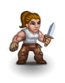
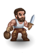
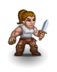
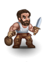
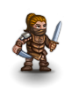
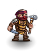
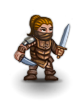
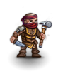

Lawenilothehl is an outlaw village found to the southwest of Terinyo. The name is an anagram of "hole in the wall", american slang for a shabby place. It contains a variety of shady characters who can be useful. Beware that most of the random inhabitants are hostile.
| Level: 1, DV: 32, PV: 7, Hits: 88, Attacks: 2, Damage: 1d6+9, Speed: 100. |
It is also apparently possible to satisfy Yergius by robbing shops, but the quantitation is not understood. Furthermore, he will not teach Pick Pockets to a PC that has already robbed a shop. So if you want a PC to have access to the Pick Pockets skill, do not rob shops before obtaining the skill. Robbing shops is a very risky activity for PCs with less than experience level 20 anyway.
The main initial reason for attempting this quest is to satisfy Yergius and receive the Detect Traps skill from him. This makes the underground level of the Dwarven Graveyard and the Pyramid in general much easier and safer, not to mention the elemental temples.
After satisfying Yergius he will teach new skills for prices ranging from 3500-5000 gold pieces. Detect Traps in particular is well worth the 3500 gold pieces it costs. He will also offer training of two different types: theoretical and practical. Theoretical training will raise the dice modifier available when experience level advancement occurs. The maximum is +4d5. This is simply a matter of cash. If the PC has plenty of money available and wants to maximize a skill that Yergius trains quickly, pay him whatever is required to get the modifier to +4d5. The second form of training he offers is practical. When the PC trains in this way, it adds successful skill checks to the skill, making it easier to advance. This also is a matter of cash. It is a very good idea to use this practical training if the PC is about to face an area where a newly learned skill will be needed. Again, the underground level of the Dwarven Graveyard and the Pyramid are obvious examples of areas where the Detect Traps skill will be needed, while the PC has probably had little time to train the skill.
Another example where Yergius' theoretical and practical training can be very useful is the Climbing skill. Climbing at 100 is required for entering the Rift, which is something all spellcasters should seriously consider for access to the Sinister Library of Niltrias. Trolls should also visit the Library for much-needed experience. It is possible to train Climbing without Yergius' assistance, for example by mountaineering, but this takes place in the wilderness, thus wasting large amounts of valuable time.
The following table summarizes the costs for Yergius training:
| Skill | Initial Cost | Practical Training Cost | Theory 1/1d3 Cost | Theory 1d5/2d4 Cost | Theory 3d3/3d4 Cost | Theory 3d5/4d4 Cost | Theory 4d5 Cost |
|---|---|---|---|---|---|---|---|
| Climbing | N/A | 30 | 600 | 1200 | 1800 | 2400 | 3000 |
| Detect Traps | 3500 | 35 | 700 | 1400 | 2100 | 2800 | 3500 |
| Disarm Traps | 5000 | 50 | 1000 | 2000 | 3000 | 4000 | 5000 |
| Listening | N/A | 20 | 400 | 800 | 1200 | 1600 | 2000 |
| Pick Locks | 5000 | 50 | 1000 | 2000 | 3000 | 4000 | 5000 |
| Pick Pockets | Free [1] | 60 | 1200 | 2400 | 3600 | 4800 | 6000 |
| Stealth | 4500 | 45 | 900 | 1800 | 2700 | 3600 | 4500 |
[1] 6000 if not given before joining guild.
Yergius will never move from his position (unless hostile), but can be swapped with using the :s command. This can be exploited to block doorways or other passages – notably, he can be used to block the exit to the Black Market, which can allow the PC to rob the store (not without risk, however).
PCs who kill Yergius become the new head of the Thieves' Guild and as such receive 50% off the prices at Barnabas' black market (see next section) but get worse deals in all other shops. Of course killing him means that he is no longer available for training, so take advantage of his training before killing him.
Yergius also sells thieves picks to non-lawful Assassins and Thieves who have no thieves picks.
The Thief Guild is an area below Lawenilothehl that is revealed once the PC receives the Kill Yergius quest. Killing Yergius here is necessary to complete the corresponding quest from Tywat Pare. It is inhabitated by muggers, assassins, and junior thieves. It consists of four chambers, whose layout and entrance location vary. The four chambers of the guild are surrounded by a looped corridor. There is one secret door leading to each chamber, except for Yergius's. The four chambers are:

| Level: 13, DV: 18, PV: 10, Hits: 410, Attacks: 3, Damage: 3d6+18, Speed: 140. |

| Level: 1, DV: 24, PV: 3, Hits: 58, Attacks: 5, Damage: 1d3+8, Speed: 100. |
| Level: 1, DV: 25, PV: 2, Hits: 32, Attacks: 3, Damage: 1d6+5, Speed: 100. |

| Crime lord: Level: 1, DV: 19, PV: 9, Hits: 80, Attacks: 4, Damage: 2d8+4, Speed: 100. Half-orc: Level: 1, DV: 12, PV: 12, Hits: 64, Attacks: 2, Damage: 2d8+8, Speed: 100. |
If the PC is on a mission from Tywat Pare to kill Hotzenplotz, a couple of points are worth remembering. Attacking Hotzenplotz will cause most of the inhabitants of Lawenilothehl to become hostile, with the exceptions of Barnabas, Yergius and Kranf Niest. Hotzenplotz is fairly tough, bypasses PV and uses poison. He will kill a PC without poison resistance in melee quite easily. However, he does not heal. A PC can attack him, run away into the wilderness and repeat this process until he is dead. The combination of these two characteristics should make it clear that the best way to attack him is with missiles or ranged spells.
It is possible for a relatively low level PC (especially Hurthlings) to kill him with thrown rocks, but special tactics are necessary. Lure him out of his hut and flee towards the right side of town while pelting him with rocks. Leave town and reenter from the left. Continue to throw rocks until he succumbs.
Hotzenplotz's guards, Grunge and Munge, will become hostile if either they are attacked, or Hotzenplotz is attacked; meaning that PCs undertaking the Kill Hotzenplotz quest will have to fight them as well (or just run away). Unlike Hotzenplotz, the guards are orcs so they see in darkness.
Hotzenplotz and his guards can be exploited. They will often attack hostile monsters that are led into their hut. If one of the nastier monsters found in Lawenilothehl (assassin, outlaw leader) attacks a weak PC, run for Hotzenplotz's hut.
When killed, Hotzenplotz typically drops from 1500 to 6000 gold pieces.
| Level: 1, DV: 12, PV: 0, Hits: 80, Attacks: 1, Damage: 1d3+3, Speed: 100. |


 





 



Beggar: Level: 1, DV: 7, PV: 0, Hits: 2, Attacks: 1, Damage: 1d3, Speed: 100. Assassin: Level: 1, DV: 16, PV: 4, Hits: 16, Attacks: 2, Damage: 1d10+2, Speed: 100. Mugger: Level: 1, DV: 10, PV: 3, Hits: 20, Attacks: 1, Damage: 1d10+4, Speed: 100. Cutpurse: Level: 1, DV: 17, PV: 0, Hits: 6, Attacks: 1, Damage: 1d4+3, Speed: 100. Bandit: Level: 1, DV: 13, PV: 2, Hits: 14, Attacks: 1, Damage: 1d8+1, Speed: 100. Outlaw: Level: 1, DV: 15, PV: 4, Hits: 18, Attacks: 2, Damage: 1d8+2, Speed: 100. Outlaw leader: Level: 1, DV: 17, PV: 5, Hits: 40, Attacks: 2, Damage: 1d8+4, Speed: 100. |
The other inhabitants are simply flavor elements with no real role in the game. They include beggars (2x), assassins, muggers, cutpurses, bandits (3x), outlaws (2x) and outlaw leaders. Beggars are useful because they can drop a potion of booze if the PC gives them 40 or more gold pieces and then Chats with them. There is a 50% chance they'll give you a fortune cookie message instead; if so, try again until they give you booze. Each beggar can only give 1 potion of booze. It is always cursed. Remember Yggaz, the fool in Terinyo, will trade random potions for potions of booze. Giving food to beggars raises alignment by nutrition value / 10, but min 10 and max 100.
Corpses of the other Lawenilothehl inhabitants yield reward from Tywat Pare in Terinyo.